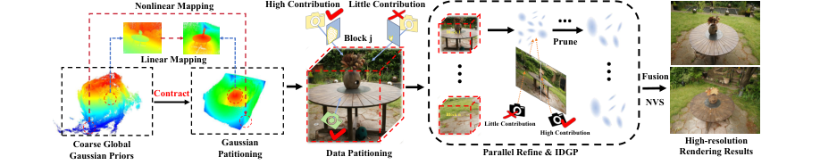
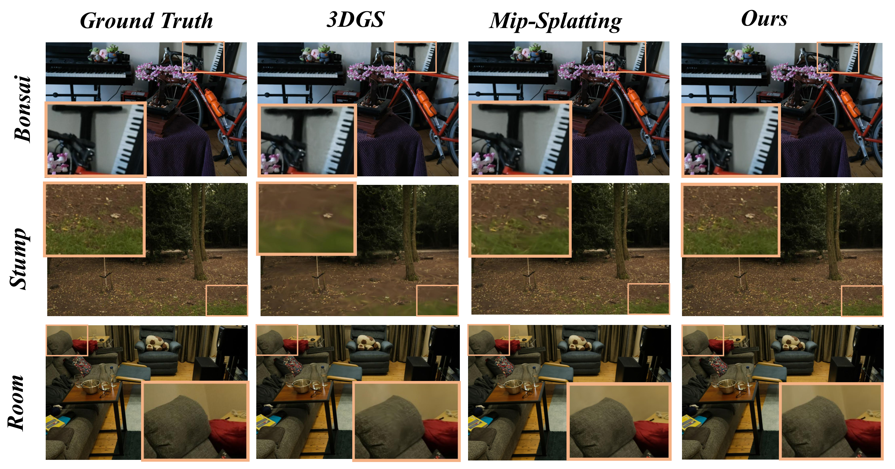
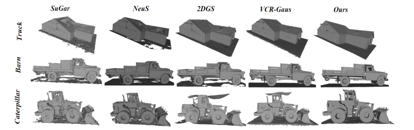

HRGS Hierarchical Gaussian Splatting for Memory-Efficient
简单摘要
在训练数据分区中，我们仅保留那些位于相应块内或对渲染结果做出重大贡献的观察结果。最后，即使在内存受限的条件下，我们的方法也能实现高质量、高分辨率的 3D 场景重建。

3D 场景重建仍然是计算机视觉和图形领域的一个长期挑战。尽管3DGS已经展示了令人印象深刻的3D重建结果，但其在高分辨率场景中的应用遇到了关键的内存可扩展性限制。
核心创新
第一，具体来说，我们首先从低分辨率数据中导出全局的、粗略的高斯表示。
第二，在训练数据划分中，我们只保留那些位于相应块内或对渲染结果有重大贡献的观察结果。
第三，在每个块的细化过程中，我们计算每个高斯基元的重要性分数，并删除那些具有最小渲染贡献的分数。
技术细节
这种方法可以在有限的内存条件下实现精确的重建。为了重建场景表面，我们强制执行由预训练的单目深度神经网络预测的法线先验，以使用余弦损失来监督渲染的法线贴图。然后将优化的块连接起来形成最终的全局高斯表示，并通过新颖的视图合成（NVS）和表面重建任务进行验证。

3.1 初步的
我们首先简要概述 3D 高斯分布 (3DGS)。在 3DGS 框架中，场景被表示为一组离散的 3D 高斯基元，用 表示，其中 是场景中高斯的总数。出于渲染目的，给定像素处多个高斯的组合颜色和不透明度贡献根据各自的不透明度进行加权。
3.2 分层块优化框架
传统的 3D 高斯方法依赖于场景重建的全局迭代优化，但在高分辨率设置（例如 Mip-NeRF 360 数据集）中遇到内存效率低下的问题。我们首先构建一个低分辨率全局高斯先验，指导逐块高分辨率优化以增强几何细节，同时保持内存效率。这种方法可以在有限的内存条件下实现精确的重建。
3.3 损失函数
为了优化粗略和细化阶段，损失函数定义如下。为了重建场景表面，我们强制执行由预训练的单目深度神经网络预测的法线先验，以使用余弦损失来监督渲染的法线贴图。D-法线是通过计算相邻点的水平和垂直有限差的叉积从渲染深度导出的。
$$ \hat{C} = \sum_{k \in M} c_k \alpha_k \prod_{j=1}^{k-1} \left( 1 - \alpha_j \right), $$
这条式子给出了 3DGS 的颜色合成规则：按深度排序后的高斯会依次把自己的颜色和透明度贡献累积到像素上。HRGS 之所以仍能在分块和裁剪后保持渲染质量，一个重要前提就是它没有改掉这套标准渲染机制，而是在同一成像模型下做更节省内存的层次化优化。
$$ \text{contract} (\hat{\mathbf{p}}_k) = \begin{cases} \hat{\mathbf{p}}_k, & \text{if } \|\hat{\mathbf{p}}_k\|_\infty \leq 1, \\ \left( 2 - \frac{1}{\|\hat{\mathbf{p}}_k\|_\infty} \right) \frac{\hat{\mathbf{p}}_k}{\|\hat{\mathbf{p}}_k\|_\infty}, & \text{if } \|\hat{\mathbf{p}}_k\|_\infty > 1. \end{cases} $$
这条式子定义了全局高斯的空间收缩映射：位于内部区域的高斯基本保持原位置，而位于外部区域的高斯会被非线性压回有界立方体内。这样做的目的，是先把大场景统一映射到可分块处理的坐标范围里，方便后续逐块高分辨率细化。
$$ \begin{aligned} \mathbf{P}^1_j = \text{Mask}\left(\mathcal{L}_{\text{SSIM}} \left( I_{G_K} (\boldsymbol{\tau}), I_{G_K \setminus G_{Kj}} (\boldsymbol{\tau}) \right ) > \epsilon \right ) \odot \boldsymbol{\tau}, \end{aligned} $$
这条式子描述的是第一类观测分配策略：如果移除当前块的高斯后，某个视角的渲染结果变化明显，就把这个视角分配给该块继续训练。作者这样做，是为了确保每个块优先看到那些真正对自己有信息量的观察，而不是平均地吃下所有相机。
$$ \mathbf{P}^2_j = \text{Mask}\left(b_{j, \text{min}} \leq \text{contract} (\hat{\mathbf{p}}_{\tau_i}) < b_{j, \text{max}} \right) \odot \boldsymbol{\tau}. $$
这条式子给出了第二类观测分配规则：把相机中心落在当前块空间边界内的视角也纳入该块训练集合。它补足了仅靠图像变化筛选视角的不足，避免块边界附近因为视角覆盖不全而产生伪影。
$$ \mathbf{P}_j(\boldsymbol{\tau}, G_{Kj}) = \mathrm{Merge}\bigl(\mathbf{P}^1_j, \mathbf{P}^2_j\bigr), $$
这条式子把前面两类观测集合合并成最终的块级训练视角：一类是视觉上确实会影响该块渲染的视角，另一类是空间位置上就位于该块附近的视角。合并后，HRGS 能同时兼顾块内细节学习和边界区域的稳定性。
$$ H_i \;=\;\sum_{r\in\mathcal{R}_b}\mathbf{1}(p_i \cap r)\,T_{i,r}, \text{where } T_{i,r} =\prod_{\substack{p_k \cap r\\\mathrm{depth}(p_k)<\mathrm{depth}(p_i)}}\bigl(1 - \alpha_k\bigr). $$
这条式子定义了高斯的重要性分数。它统计某个高斯在训练射线上的可见贡献：如果高斯经常出现在可见路径上，而且前面遮挡不强，它的分数就会更高；反之则可以被优先裁剪。这个分数正是 HRGS 在块级优化里做轻量剪枝的依据。
$$ \mathcal{L}_n = \| \hat{\mathbf{N}} - \mathbf{N} \|_1 + (1 - \hat{\mathbf{N}} \cdot \mathbf{N}). $$
这条式子是法线监督损失：一方面用 L1 约束渲染法线接近先验法线，另一方面再用点积项约束两者方向一致。作者加入这项损失，是为了让 HRGS 在追求高分辨率细节时，不至于把表面几何优化成噪声化的薄片结构。
$$ \overline{\mathbf{N}}_d = \frac{\nabla_v \mathbf{d} \times \nabla_h \mathbf{d}}{\left|\nabla_v \mathbf{d} \times \nabla_h \mathbf{d}\right|}, $$
这条式子给出了 D-Normal 的计算方式：直接从渲染深度图的水平、垂直梯度叉乘得到局部表面法线。它的作用是把深度变化转成可监督的几何朝向信号，从而帮助模型更稳定地更新高斯位置并恢复表面结构。
实验结论
实验主要验证：虽然我们的方法比一些并发工作稍慢，但它实现了相当好的重建质量，比 2DGS (0.3 ± 0.45) 有了显着的改进。结果上，从左到右的重建——SuGar、NeuS、2DGS 和 VCR-Gaus——证明我们的方法提供了更完整的表面几何形状，增强了平面区域的平滑度。
| @ | Mip-NeRF | Instant-NGP | zip-NeRF | 3DGS | 3DGS+EWA | Mip-Splatting | Ours |
|---|---|---|---|---|---|---|---|
| PSNR | 24.10 | 24.27 | 20.27 | 19.59 | 22.81 | 26.22 | 27.91 |
| SSIM | 0.706 | 0.698 | 0.559 | 0.619 | 0.643 | 0.765 | 0.863 |
| LPIPS | 0.428 | 0.475 | 0.494 | 0.476 | 0.449 | 0.392 | 0.342 |
| 基于隐式表面的方案 | 基于高斯的方案 | ||||||
|---|---|---|---|---|---|---|---|
| Scene | NeuS | MonoSDF | SuGaR | 3DGS | 2DGS | VCR-GauS | Ours |
| Barn | 0.29 | 0.49 | 0.14 | 0.13 | 0.36 | 0.62 | 0.65 |
| Caterpillar | 0.29 | 0.31 | 0.16 | 0.08 | 0.23 | 0.26 | 0.29 |
| Courthouse | 0.17 | 0.12 | 0.08 | 0.09 | 0.13 | 0.19 | 0.23 |
| Ignatius | 0.83 | 0.78 | 0.33 | 0.04 | 0.44 | 0.61 | 0.64 |
| Meetingroom | 0.24 | 0.23 | 0.15 | 0.16 | 0.16 | 0.19 | 0.24 |
| Truck | 0.45 | 0.42 | 0.26 | 0.18 | 0.16 | 0.52 | 0.61 |
| Mean | 0.38 | 0.39 | 0.19 | 0.09 | 0.30 | 0.40 | 0.45 |
| Time | >24h | >24h | >1h | 14.3m | 34.2m | 53m | 2h |


4.1 实验设置
作者分别在室外大场景新视角合成基准和真实重建场景表面评测基准上测试 HRGS，用来比较渲染质量、几何质量以及整体资源开销。
4.2 消融研究
在消融部分，作者重点考察了分块数量、观测分配策略、块内裁剪和法线监督这些设计是否真的带来收益。结果说明，块数并不是越多越好：过少会限制细节恢复，过多又会破坏跨块一致性，而适中的层次划分才能在显存和质量之间取得最佳平衡。
同时，观测筛选和重要性裁剪并不是可有可无的工程细节。只让与当前块真正相关的视角参与训练，配合对低贡献高斯的裁剪，既降低了局部优化成本，也减少了块边界附近的伪影；法线监督则进一步稳定了表面几何，使平面区域更平滑、薄片伪影更少。
理解评价
从贡献上看，HRGS 最重要的地方不是单纯压缩 3DGS 参数量，而是把高分辨率重建的显存问题拆成全局粗表示、块级细化和块内裁剪三个层次来处理。这样既保住了场景整体结构，又把最贵的细节优化限制在局部块内完成。
它最有说服力的证据来自实验：无论是新视角合成还是表面重建，HRGS 都说明只要块划分、观测分配和重要性裁剪设计得当，就可以在显著降低内存占用的同时保住关键几何细节和渲染质量。这说明论文的收益来自整套层次化优化链路，而不只是某一个小技巧。
它的局限也需要明确看到：当前方案仍依赖块划分质量，以及单目深度/法线先验的稳定性；如果全局粗表示偏差较大，后续局部细化也可能被错误初始化拖累。后续更值得继续推进的方向，是让块划分和观测分配更自适应，并进一步降低对外部几何先验的依赖。